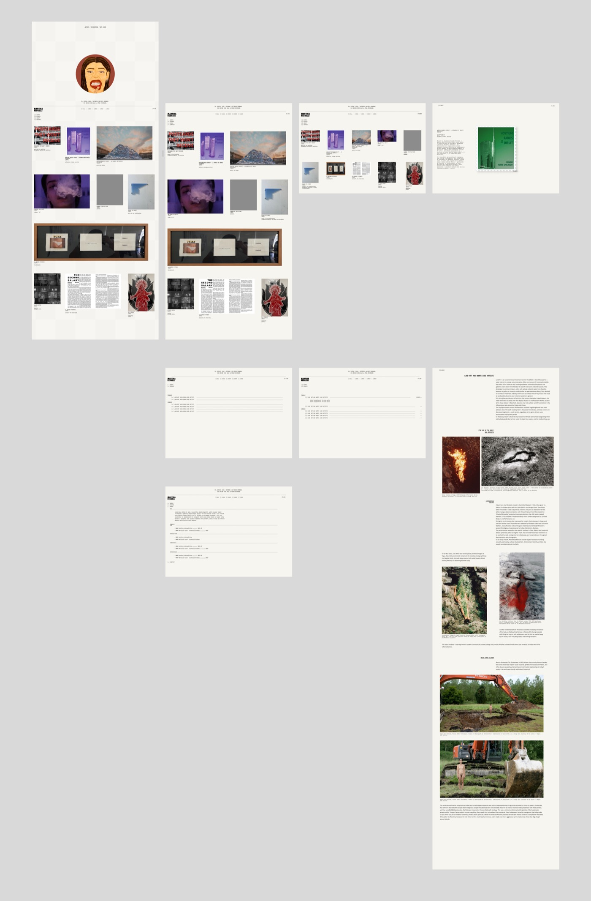
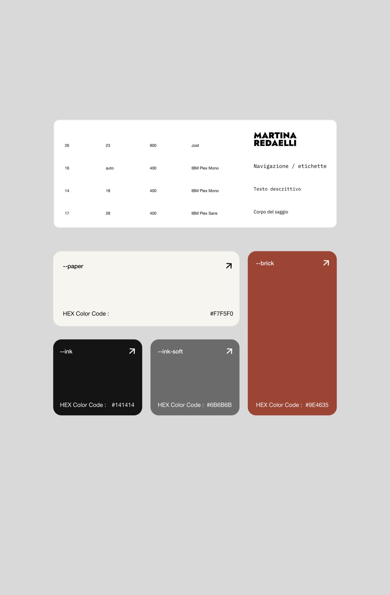
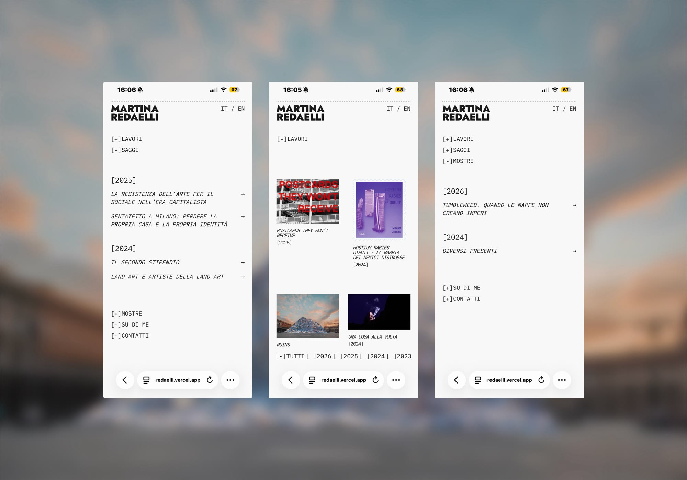

Martina Redaelli portfolio d'artista
Un sito-portfolio per Martina Redaelli, artista concettuale, scrittrice e curatrice. Un unico spazio che tiene insieme i suoi tre lati in un catalogo digitale bilingue.
Martina lavora su tre fronti e le serviva un sito che li raccontasse senza frammentarli. È arte concettuale, dove il testo che accompagna l'opera pesa quanto l'opera stessa: serviva uno spazio che desse dignità a entrambi — non una galleria di immagini mute — e predisposto per il bilingue.
Il mio ruolo
Design e sviluppo. Concept, direzione visiva e impaginazione in Figma; poi sviluppo front-end da zero in HTML, CSS e JavaScript.


Una hero "silenziosa" in apertura
Martina voleva la sua illustrazione, ma metterla in prima pagina con la navbar avrebbe fatto sembrare il sito quello di un'illustratrice — che lei non è. Così l'illustrazione ha il suo momento silenzioso in apertura; scorrendo si arriva alla vera pagina di navigazione e al catalogo. L'illustrazione c'è, ma non definisce (né travisa) chi è Martina.
Tre attività, nessuna gerarchia
Opere, saggi e curatela sono organizzati in una tag-list che li tiene sullo stesso piano, senza gerarchie: nessuno dei tre lati viene prima degli altri.

La pagina fa da cornice ai lavori, senza distrazioni
Sfondo chiaro, testo nero, tipografia editoriale. Nelle pagine-opera l'immagine è protagonista, ma non da sola: il testo che l'accompagna ha quasi lo stesso peso, e il respiro della pagina serve a tenerli in equilibrio.
Bilingue, perché l'arte lo è
Tutto il sito è in italiano e inglese, con un toggle che scambia i testi senza ricaricare la pagina. Perché il mondo dell'arte è internazionale, e il portfolio doveva poterci parlare.
Scritto a mano, senza framework
Design in Figma; sviluppo da zero in HTML, CSS e JavaScript vanilla, senza framework. Colori e tipografia gestiti con token CSS. Le parti interattive sono scritte a mano in JavaScript: il visore delle opere (navigazione tra le immagini e zoom) e l'accordion della home, ad apertura singola, animato con grid-template-rows per una transizione morbida. È stato il primo JavaScript interattivo che ho scritto, mentre lo stavo ancora imparando: senza framework, stato ed eventi li ho gestiti a mano.
Outcomes
Il mio primo progetto per un cliente reale, e il primo JavaScript interattivo serio che ho scritto mentre iniziavo a studiarlo.